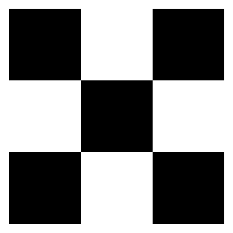
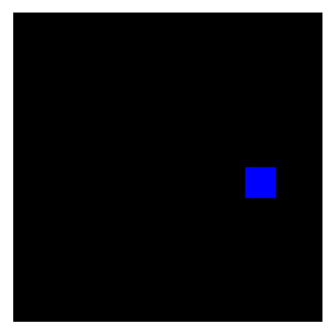
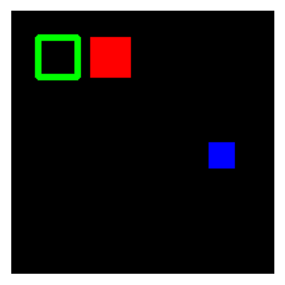
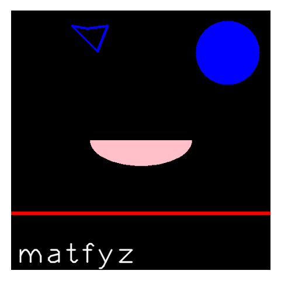
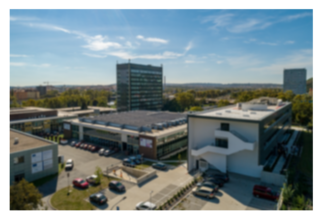
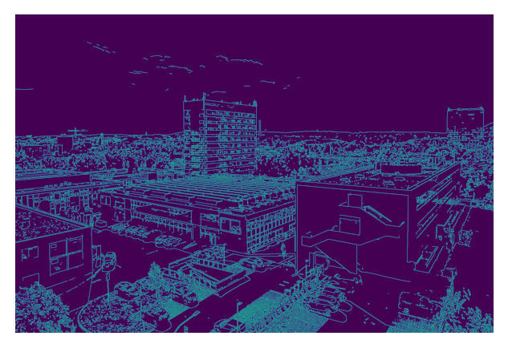
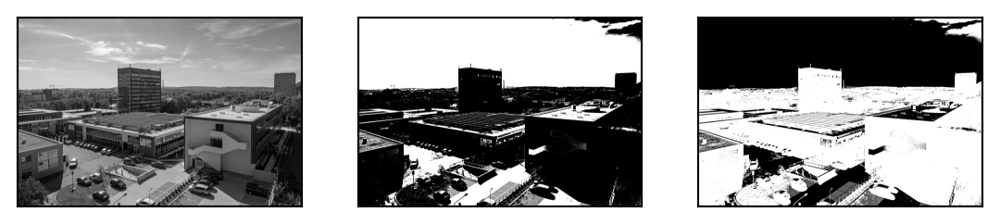
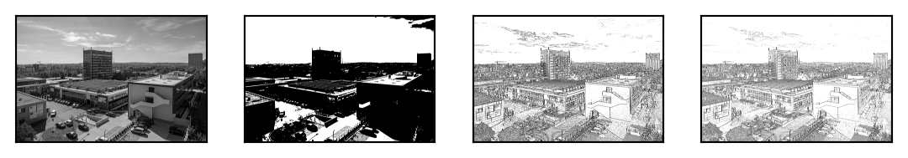

import cv2 as cv
cv.__version__'4.8.1'conda install -c conda-forge opencvpip install opencv-contrib-pythonNová verze každý půlrok
coreimgproc
video
highgui
calib3dfeatures2d
objdetect
ml - machine learning, klastrování, tříděnígpuccl - akcelerace pomocí openclimport cv2 as cv
cv.__version__'4.8.1'. . .
# ve skriptu
img = cv.imread("check.png")
cv.imshow('checker', img)
cv.waitKey(0). . .
# v notebooku
import matplotlib.pyplot as plt
%matplotlib inline
img = cv.imread("check.png")
plt.figure(figsize=(3,3))
plt.axis('off')
plt.imshow(img)
plt.show()
def rescale(img, scale = 0.5):
width = int(img.shape[1] * scale)
height = int(img.shape[0] * scale)
return cv.resize(img, (width, height), interpolation=cv.INTER_AREA). . .
import numpy as np
nic = np.zeros((200,200,3), dtype='uint8')
nic[100:120,150:170] = 0,0,255
plt.figure(figsize=(3,3)); plt.axis('off')
plt.imshow(nic)
plt.show()
cv.rectangle(nic, (20,20), (50,50), (0,255,0), thickness=3)
cv.rectangle(nic, (60,20), (90,50), (255,0,0), thickness=-1)
plt.figure(figsize=(3,3)); plt.axis('off')
plt.imshow(nic)
plt.show()
nic2 = np.zeros((512,512,3), np.uint8)
cv.circle(nic2,(427,83), 63, (0,0,255), thickness=-1)
cv.line(nic2,(0,400),(511,400),(255,0,0),thickness=5)
# elipsa se středem, velikostí os, rotace, začátek a konec elipsy v úhlech
cv.ellipse(nic2,(256,256),(100,50),0,0,180,(255,192,202),-1)
pts = np.array([[150,35],[120,30],[170,80],[190,30]], np.int32)
cv.polylines(nic2,[pts],True,(0,0,255),thickness=3)
font = cv.FONT_HERSHEY_PLAIN
cv.putText(nic2,'matfyz',(10,500), font, 4,(255,255,255),2,cv.LINE_AA)
plt.figure(figsize=(3,3)); plt.axis('off')
plt.imshow(nic2)
plt.show()
Polylines - třetí argument uzávírá shape
cv.blur - jen průměrcv.GaussianBlur - vážený průměr gaussovkou - více přirozenécv.medianBlur - medián, kernel čtverec (!),
cv2.bilateralFilter
\[ B = \frac{1}{25} \begin{pmatrix}1 & 1 & 1 & 1 & 1 \\1 & 1 & 1 & 1 & 1 \\1 & 1 & 1 & 1 & 1 \\1 & 1 & 1 & 1 & 1 \\1 & 1 & 1 & 1 & 1 \\ \end{pmatrix} \]
\[ G(x, y) = \displaystyle\frac{1}{2\pi\sigma}e^{-\frac{x^{2} + y^{2}}{2\sigma^{2}}} \]
img = cv.imread("troja.jpg")
img = rescale(img, 0.3)
img = cv.cvtColor(
img, cv.COLOR_BGR2RGB
)
plt.figure(figsize=(4,4));
plt.imshow(img);plt.axis('off')
plt.show(). . .
blur = cv.GaussianBlur(
img, (13,13), 5
)
plt.figure(figsize=(4,4));
plt.imshow(blur);plt.axis('off')
plt.show()
canny = cv.Canny(img, 125, 175)
plt.figure(figsize=(4,4));
plt.imshow(canny);plt.axis('off')
plt.show()
Pouze na binárních obrazech
Dilatace
cv.dilateEroze
cv.erodeimg = cv.imread('troja.jpg', cv.IMREAD_GRAYSCALE)
_,t1 = cv.threshold(img,127,255,cv.THRESH_BINARY)
_,t2 = cv.threshold(img,127,255,cv.THRESH_BINARY_INV)
images = [img, t1, t2]
for i in range(3):
plt.subplot(1,3,i+1),plt.imshow(images[i],'gray',vmin=0,vmax=255)
plt.xticks([]),plt.yticks([])
img = cv.imread('troja.jpg', cv.IMREAD_GRAYSCALE)
img = cv.medianBlur(img,5)
_,th1 = cv.threshold(img,127,255,cv.THRESH_BINARY)
th2 = cv.adaptiveThreshold(img,255,cv.ADAPTIVE_THRESH_MEAN_C,\
cv.THRESH_BINARY,11,2)
th3 = cv.adaptiveThreshold(img,255,cv.ADAPTIVE_THRESH_GAUSSIAN_C,\
cv.THRESH_BINARY,11,2)
images = [img, th1, th2, th3]
for i in range(4):
plt.subplot(1,4,i+1),plt.imshow(images[i],'gray')
plt.xticks([]),plt.yticks([])
plt.show()
cv.findContoursmode)
image, contours, hierarchy = cv.findContours(
image, mode, method
offset=0
)method)
vstup ⇒ gray ⇒ blur
⇒ obrysy ⇒ profit
. . .
Jaký je rozdíl mezi hranou (edge) a obrysem (contour)?
stáhne data
u každého objektu zjistí:
seřaďte objekty podle plochy od největšího
vytvořit ASCII soubor ve formátu:
číslo, X, Y, S
rules:
- if: $MFF_UKOL == "2"
when: always
- when: never